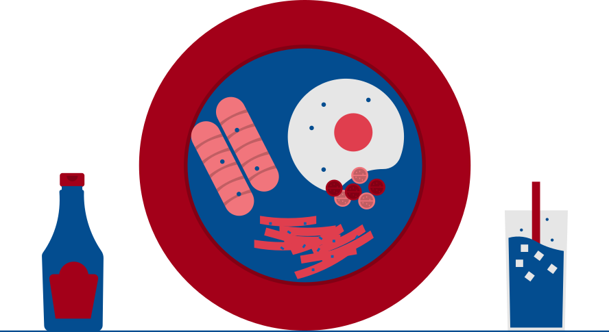
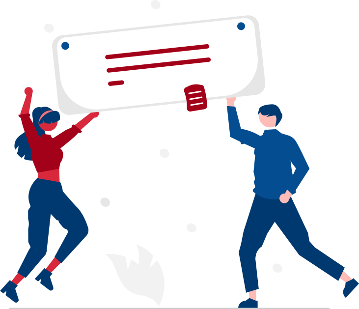

Dicionário sempre à mão
Alfabeto, números, expressões e busca PT↔HR que ignora acento — dá para procurar "cokolada" e achar čokolada.
Croata para quem fala português
Os sete casos explicados em português, com áudio de nativo e uma lição por dia. A primeira não pede login — é só abrir e começar.
Grátis para começar · sem cadastro na primeira lição
É para pedir café em Split, ler o cardápio em Dubrovnik, entender a sua avó no telefone. Por isso cada exercício sai de uma frase que alguém realmente diz — não de uma tabela de declinação.
Dentro de uma lição
Cada lição vale 10. Errar tira ponto, mas não tranca nada: o feedback mostra a forma certa e explica por que o caso é aquele.
1 · Transformação
Você recebe a palavra como ela aparece no dicionário e a frase que precisa dela. Preencher a lacuna, escolher a forma, montar a frase arrastando as peças.

2 · Tradução
Agora sem apoio: a frase vem em português e você escreve em croata. A correção é tolerante — acento faltando e espaço a mais não reprovam ninguém.
3 · Produção livre
Até 400 caracteres sobre o tema da lição. A correção volta na hora, feita por IA, e um falante nativo revisa por cima depois. Aqui ninguém perde ponto por tentar.
A trilha
Cada módulo ancora um caso num tema do dia a dia. No fim vem o checkpoint, montado na hora com os exercícios que você errou — 70% para seguir.
O que tem dentro
Alfabeto, números, expressões e busca PT↔HR que ignora acento — dá para procurar "cokolada" e achar čokolada.
Cada letra, palavra e frase tem MP3. Você toca antes de responder e toca de novo no feedback, já com a forma certa.
Faltou um dia? A ofensiva entra em recuperação: você salva fazendo a lição pendente mais a de hoje. Só zera com dois dias parados.
No fim do módulo, o app sorteia os exercícios priorizando o que você errou. Não passou? Refaz só o checkpoint, não o módulo inteiro.
Puxa de tudo que você já concluiu, com peso extra no que é mais antigo. É o que impede o módulo 2 de evaporar quando você chega no 8.
A lição 1 abre direto. Quando você entrar com Google ou Apple, o progresso que já fez migra junto — nada se perde.
